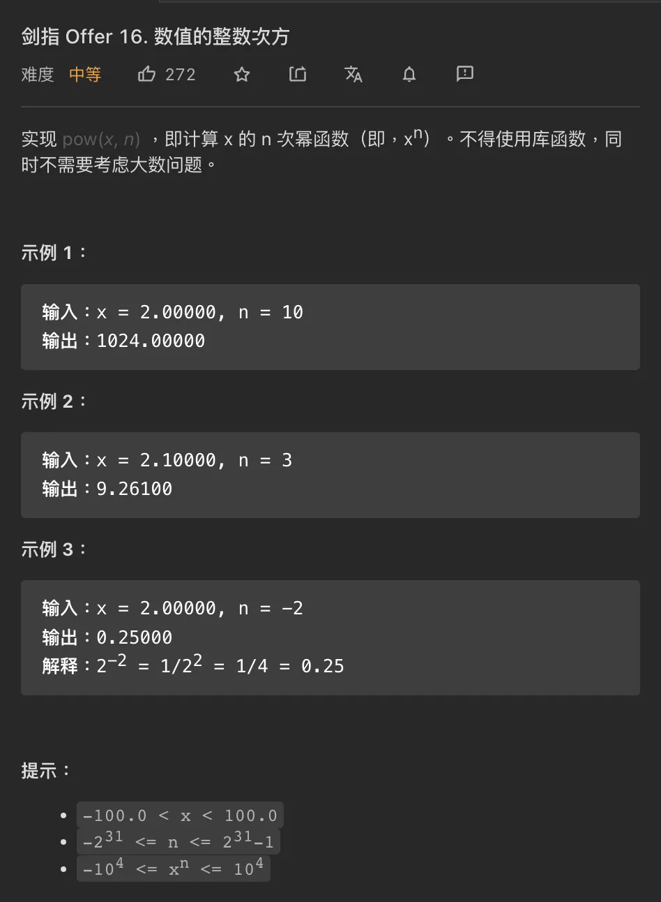

剑指 Offer 16. 数值的整数次方
Question

✍🏽 My Solution
Solution #1 [Math Recursion]
执行用时：0 ms, 在所有 Java 提交中击败了100.00%的用户
内存消耗：40.1 MB, 在所有 Java 提交中击败了65.15%的用户
class Solution {
public double myPow(double x, int n) {
if (n >= 0) return rPow(x, n);
else return 1/(rPow(x, -1*(n+1))*x);
}
public double rPow(double x, int n) {
if (n == 0) return 1;
double halfPow = rPow(x, n/2);
if (n % 2 == 1) {
return halfPow * halfPow * x;
} else {
return halfPow * halfPow;
}
}
}
Explanation (in my words)
- How does their solution work?
- 拆解問題
- 偶數 x^n = x^(n/2) * x^(n/2)
- 奇數 x^a = x^(n/2) * x^(n/2) * x
- 得出遞推公式
- 偶數 f(x, n) = f(x, n/2) * f(x, n/2)
- 奇數 f(x, n) = f(x, n/2) * f(x, n/2) * x
- 遞推公式重複的 f(x, n/2) 就不需要重複計算
- 拆解問題
- What is the space/time complexity of their solution?
- time: O(log n)
- space: O(log n)